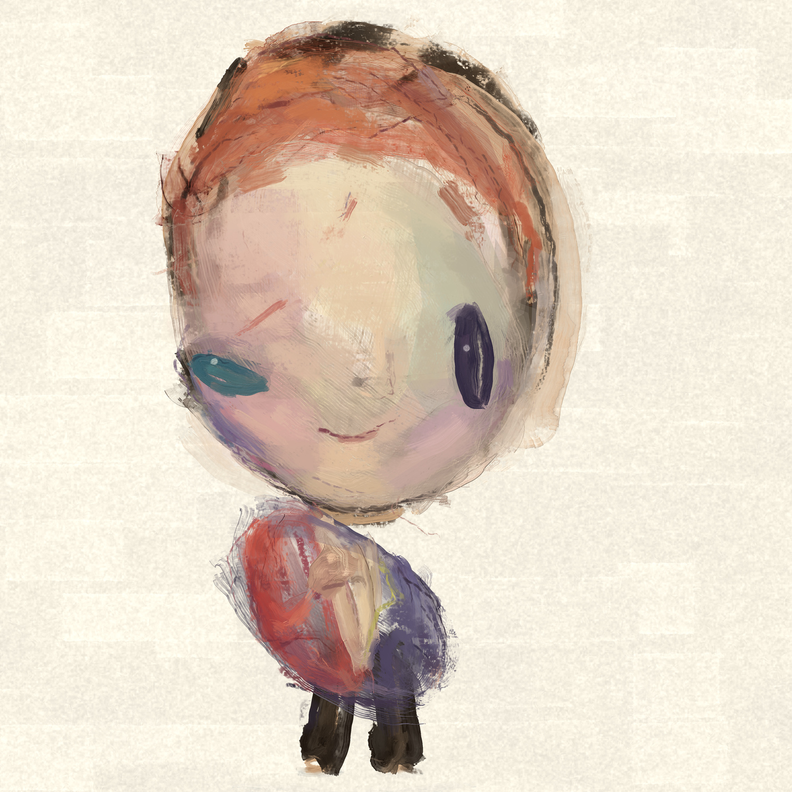

A larger painting
Bowie
The same unequal gaze.
More paint to spend time with.

A scale diagram. It helps judge the size relationship; the physical encounter still has to be tested.
A larger painting
The same unequal gaze.
More paint to spend time with.

A scale diagram. It helps judge the size relationship; the physical encounter still has to be tested.